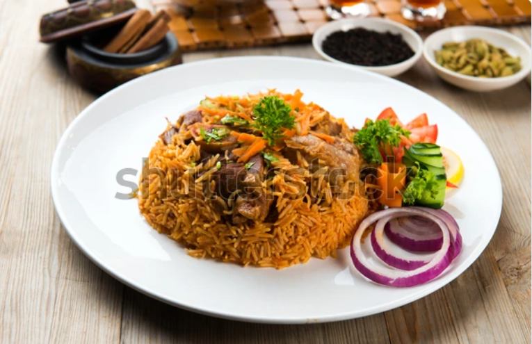

Pilau Recipe

Pilau is a one-pot rice dish known for its rich aroma and warm spices.
The rice is cooked slowly so it absorbs all the flavors, resulting in fluffy, tasty grains. It is commonly served
at special occasions and can be enjoyed on its own or with side dishes.
Ingredients
- Rice
- Onions
- Cooking oil
- Garlic
- Ginger
- Pilau spices
- Meat
- Salt
- Water
Steps
- Wash the rice and set it aside to drain.
- Heat cooking oil in a pot and fry the onions until they turn golden brown.
- Add garlic and ginger and cook for a short time until fragrant.
- Add the pilau spices and stir well to release their flavor.
- Add the meat and cook until it browns.
- Pour in stock or water and add salt, then bring to a boil.
- Add the rice and stir once to mix everything evenly.
- Cover the pot and cook on low heat until the rice is fully cooked and the liquid is absorbed.
- Remove from heat, fluff the rice gently, and serve hot.
Home